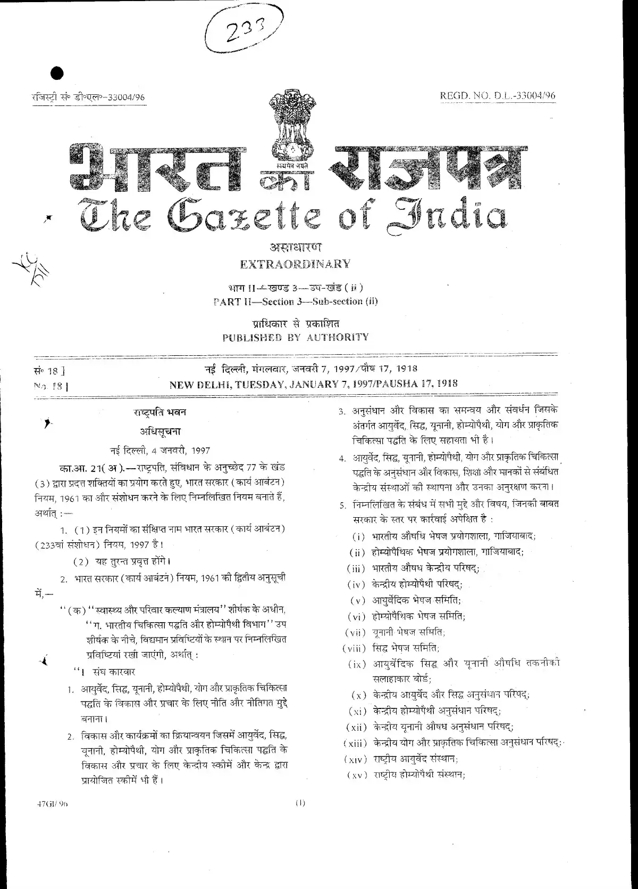
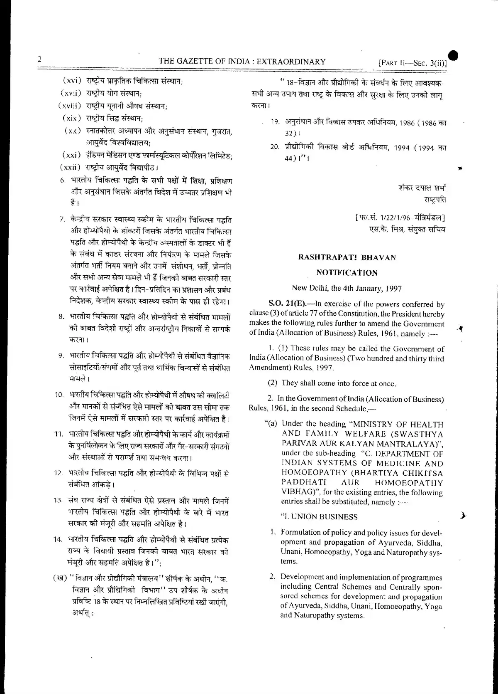
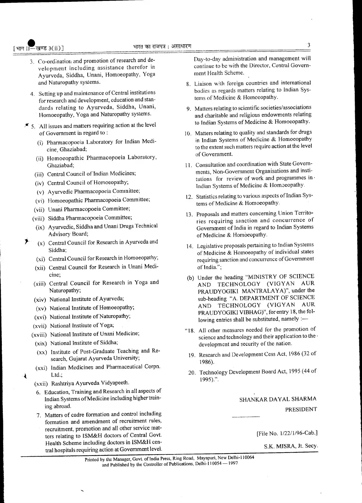

Amendment #233 (S.O. 21(E), 1997)
2 changes: 0 to the First Schedule, 2 to the Second Schedule. 2 applied
The order, page by page
Page 1 of 3

Page 2 of 3

1Schedule 2 › MINISTRY OF HEALTH AND FAMILY WELFARE › DEPARTMENT OF INDIAN SYSTEMS OF MEDICINE AND HOMOEOPATHY
- I. UNION BUSINESS
- 1. Formulation of policy and policy issues for development and propagation of Ayurveda, Siddha Unani, Homoeopathy, Yoga and Naturopathy systems.
- 2. Development and implementation of programmes including Central Schemes and Centrally sponsored schemes for development and propagation of Ayurveda, Siddha, Unani, Homoeopathy, Yoga and Naturopathy systems. 3
- 3. Co-ordination and promotion of research and development including assistance therefor in Ayurveda, Siddha, Unani, Homoeopathy, Yoga and Naturopathy systems.
- 4. Setting up and maintenance of Central institutions. for research and development, education and standards relating to Ayurveda, Siddha, Unani Homoeopathy, Yoga and Naturopathy systems.
- 5. All issues and matters requiring action at the level of Government in regard to:
and 26 more
- i. Pharmacopoeia Laboratory for Indian Medicine, Ghaziabad
- ii. Homoeopathic Pharmacopoeia Laboratory Ghaziabad
- iii. Central Council of Indian Medicines
- iv. Central Council of Homoeopathy
- v. Ayurvedic Pharmacopoeia Committee
- vi. Homoeopathic Pharmacopoeia Committee
- vii. Unani Pharmacopoeia Committee (viii) Siddha Pharmacopoeia Committee
- ix. Ayurvedic, Siddha and Unani Drugs Technical Advisory Board
- x. Central Council for Research in Ayurveda and Siddha
- xi. Central Council for Research in Homoeopathy
- xii. Central Council for Research in Unani Medicine (xiii) Central Council for Research in Yoga and Naturopathy
- xiv. National Institute of Ayurveda
- xv. National Institute of Homoeopathy
- xvi. National Institute of Naturopathy (xvii) National Institute of Yoga (xviii) National Institute of Unani Medicine
- xix. National Institute of Siddha
- xx. Institute of Post-Graduate Teaching and Research, Gujarat Ayurveda University
- xxi. Indian Medicines and Pharmaceutical Corpn. Ltd. (xxii) Rashtriya Ayurveda Vidyapeeth.
- 6. Education, Training and Research in all aspects of Indian Systems of Medicine including higher training abroad.
- 7. Matters of cadre formation and control including formation and amendment of recruitment rules recruitment, promotion and all other service matters relating to ISM&H doctors of Central Govt. Health Scheme including doctors in ISM&H central hospitals requiring action at Government level. Day-to-day…
- 8. Liaison with foreign countries and international bodies as regards matters relating to Indian Systems of Medicine & Homoeopathy.
- 9. Matters relating to scientific societies/associations and charitable and religious endowments relating to Indian Systems of Medicine & Homoeopathy.
- 10. Matters relating to quality and standards for drugs in Indian Systems of Medicine & Homoeopathy to the extent such matters require action at the level of Government.
- 11. Consultation and coordination with State Governments, Non-Government Organisations and institutions for review of work and programmes in. Indian Systems of Medicine & Homoeopathy.
- 12. Statistics relating to various aspects of Indian Systems of Medicine & Homoeopathy.
- 13. Proposals and matters concerning Union Territories requiring sanction and concurrence of Government of India in regard to Indian Systems of Medicine & Homoeopathy.
- 14. Legislative proposals pertaining to Indian Systems of Medicine & Homoeopathy of individual states requiring sanction and concurrence of Government of India.
applied at schedule 2 › ministry MINISTRY OF HEALTH AND FAMILY WEL- FARE (SWASTHYA AUR PARIVAR KALYAN MANT- RALAYA) › department C in the Rules after #233
read page break
Page 3 of 3

2Schedule 2 › MINISTRY OF SCIENCE AND TECHNOLOGY › DEPARTMENT OF SCIENCE AND TECHNOLOGY › entry 18
- 18. All other measures needed for the promotion of science and technology and their application to the development and security of the nation.
- 19. Research and Development Cess Act, 1986 (32 of 1986).
- 20. Technology Development Board Act, 1995 (44 of 1995).
applied at schedule 2 › ministry MINISTRY OF SCIENCE AND TECHNOLOGY › department A › entry 18 in the Rules after #233
How this document was read
From the Government of India (Allocation of Business) Rules, 1961 and their amendments, as published by the Cabinet Secretariat (cabsec.gov.in), read by orgpedia. The readings of the older scanned gazettes have known gaps.